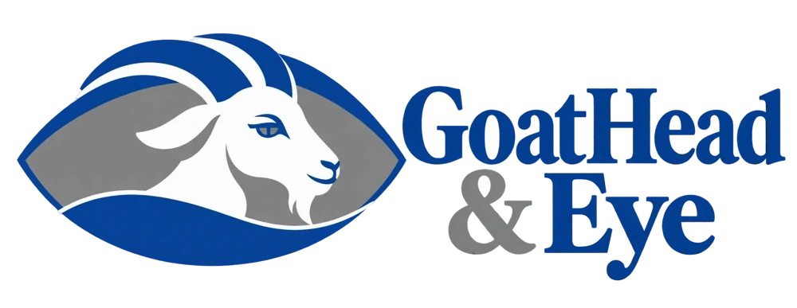
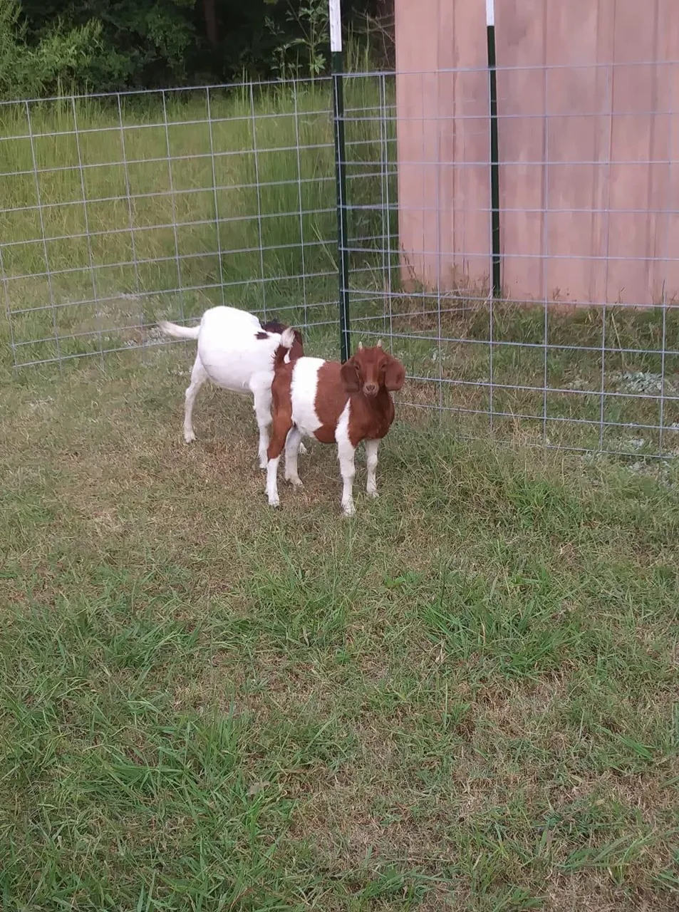

Grid-Zero Workshop
Exploring how to power an existing workshop without a utility connection, using practical solar, batteries and sensible tool loads. Planning stage.

We're two ordinary, slightly weird Okies trying to trade a life of bills and outside dependencies for a quieter, more self-reliant one. We haven't figured it all out. That's why we're doing this.
What we're up toWe want to find a place in a sparsely populated Oklahoma county and build a practical, mostly off-grid homestead. Grow and raise more of what we use. Repair things instead of replacing them when it makes sense. Trade locally. Spend less time worrying about the next bill.
We aren't rich, and we're not presenting ourselves as experts. We're testing whether resourcefulness, persistence, good neighbors, and a willingness to learn can get us there.
We'll share what works, what fails, and what it really costs. No miracle claims, no manufactured success stories.

These two spent years teaching our family how to care for goats. Lulabell now rests on our current property. Kaitlyn Dale is the mother of Bootleg Jim and Cornelia, the goats we have today.
They mark the beginning of a lasting commitment. In time, we’ll share Bootleg Jim’s struggle to survive—the mistakes, a great veterinarian’s care, love, prayer requests, encouragement, and the stubborn determination that kept us going.
This is where our story started. We’ll add more photographs and video as we document the journey.
Exploring how to power an existing workshop without a utility connection, using practical solar, batteries and sensible tool loads. Planning stage.
Reclaiming overgrown ground and planning a safer, more useful fence for our pet goats. Seeking sensible approaches and potential collaborators.
Can an aging cargo van be put back to work without spending more than it's worth? Research and diagnosis come first.
Searching for affordable ways to reach a rural foothold in Oklahoma, and testing ideas before we bet the household on them.
Repairs, reuse, maker projects and occasional ideas that may be either brilliant or ridiculous. We'll find out.
We're interested in practical collaborations with manufacturers, contractors, makers and local businesses. Our real-world projects may suit equipment demonstrations, product testing, materials partnerships or case studies. We can provide candid feedback and project documentation; we're not promising an influencer audience or favorable reviews.
We evaluate offers carefully and don't take on financing or property obligations just to call something a partnership.
Email Goat Head & Eye